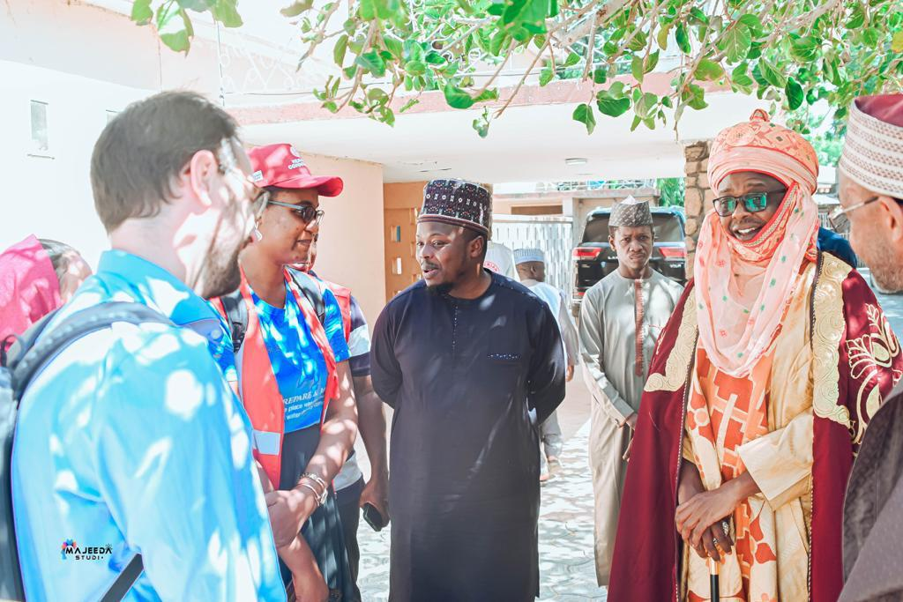
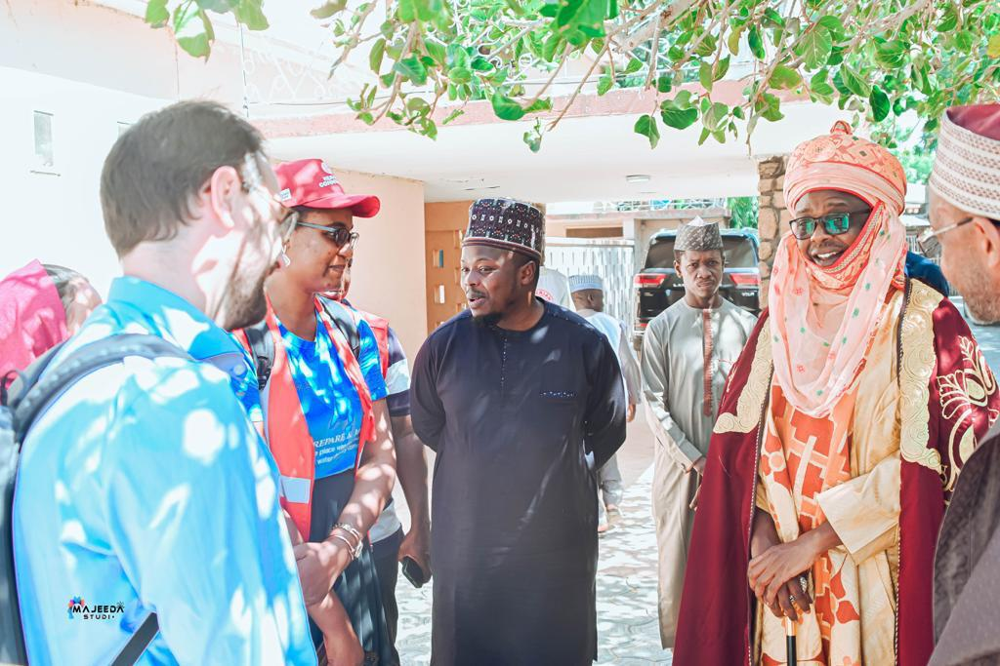

Community Service : EFMC Project
Childcare and Wellness is collaborating with EFMC to provide services in order to curb the high rate of HIV in the country and provide treatment for the disease. The Clinic
- Provides HIV counseling and testing to the public according to National guidelines
- Ensure that HIV positive clients are referred to EFMC treatment site
- Give free HIV test to improve uptake of testing by clients
- Serve as drug pick-up points and sample referral center for positive clients enrolled into care or treatment
Maternal Health Young Champions Program (MHYC)
Childcare & Wellness Clinics partnered with Institute of International Education to implement the maternal health young champions program. A program sponsored by the Maternal Health Task Force of the Harvard School of Public Health. The program offered a unique fellowship to ten young people who were passionate about improving maternal health in their home country. Selected young champions were matched with in-country mentors from selected organizations for a nine-month research or field project internship focusing on a particular area of maternal health. The fellowship included leadership training and participation in The Global Maternal Health Conference 2013 in Arusha, Tanzania.
Ideas Project – LSHTM
Childcare & Wellness Clinics (CWC) collaborates with the London School of Hygiene and Tropical Medicine (LSH&TM) on the 2014/2015 IDEAS project. The IDEAS (Informed Decisions for Actions) project is a learning and evaluation project that aims to improve the health and survival of mothers and babies through generating evidence to improve policy and practice. IDEAS work in Ethiopia, Northeastern Nigeria and Uttar Pradesh in India and uses measurement, learning and evaluation to find out what works, why and how it works in maternal and newborn health programmes. CWC manages, implements and coordinates the activities of IDEAS research in the North-Eastern region of Nigeria, which consists of qualitative and quantitative researches. The project will run from 2014 to 2015.


Family Included Global Alliance
A global project is here in Nigeria to advocate for more inclusion of fathers maternal and child health. Nigeria joins the Family included Global Alliance with Childcare and Wellness Clinics is the principal partner of FamilyIncluded.com in Nigeria.
Family Included is a project which seeks to help actualize the WHO declaration on family inclusive maternal healthcare; it is carried out by Dad. Info which is a UK based information service for fathers that has worked closely with UK maternity and child services for many years, providing them with resources for their own users, both fathers and mother. “WHO has declared family inclusive maternal healthcare to be one of five top global priorities, because when families (fathers and others) are included, the health of mother and baby improves.”
Last year, WHO published the evidence backing up family-inclusive care. Since then, we have been collating and sharing all new research at FamilyIncluded.com. We have started to develop the Family Included Global Alliance, bringing together practitioners and policymakers interested in supporting the “community of care” around each child. It is resourced by a growing body of relevant research and reports on successful approaches all over the world.
We can build this Network in Nigeria, linked into the global network so that Nigerian services can learn from researchers, practitioners and policy makers not just in Nigeria, but everywhere in the world and Nigeria can teach others around the world on the basis of its own advances and successes.
The project in Nigeria is proposed to include
- Training for professionals so that they become skilled and confident in working with men, couples and groups. These are vital components of family inclusive care, alongside the one-to-one support offered to the mother.
- Information for fathers about the importance of fatherhood for child welfare and how they can become fully engaged, overcoming the structural and cultural barriers that have formed around their role as careers. Also needed is information for mothers and all family members about the important role of fatherhood within the “community of care” that exists around every child.
- Networks for health workers implementing family inclusive care, whereby they can receive advice and support directly and informally from peers. This peer networking is essential in providing continued support beyond start-up and training programmes.
- A forum for policy makers from government and civil society groups, where all aspects family inclusive care can be considered, in particular the common barriers that prevent its development. Previous experience of developing family inclusive care demonstrates that these barriers will become a primary focus of attention as the ideal of family inclusive care is pursued.
Ideas At 7
Childcare & Wellness Clinics, Abuja has been partnering with the London School of Hygiene and Tropical Medicine (@LSHTH_IDEAS) since 2014 on the Informed Decisions for Actions in Maternal and Newborn Health (IDEAS) project to find out “what works, why and how when it comes to improving the lives of women and babies. The IDEAS project is taking stock of seven years of groundbreaking research and we are proud to be a part of their work generating evidence, findings, and new knowledge.
Follow the link below for a full report
Report
PULSE PROJECT
PULSE Project and Our Commitment to Global Health
At Childcare and Wellness Clinics, we are dedicated to advancing public health initiatives and ensuring that communities are at the forefront of healthcare delivery. We are proud to announce our collaboration with esteemed organizations such as the International Federation of the Red Cross, Nigeria Red Cross, the University of Geneva and the London School of Hygiene and Tropical Medicine on a ground-breaking initiative: The PULSE Project.
The PULSE Project is an innovative research initiative focused on evaluating and enhancing community engagement in vaccine delivery, specifically within humanitarian settings.
Our Vision for the Future
By the conclusion of the PULSE Project, we aim to have:
Join Us in Shaping Healthier Communities
Childcare and Wellness Clinics is committed to the idea that community involvement is critical in the success of healthcare initiatives, especially in vaccine delivery.
We invite you to join us in this significant endeavor as we work towards empowering communities, enhancing vaccine uptake, and contributing to the broader field of community engagement in vaccination.
Together, we can create a world where every community has a voice in its healthcare journey.
 
